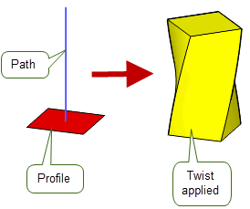
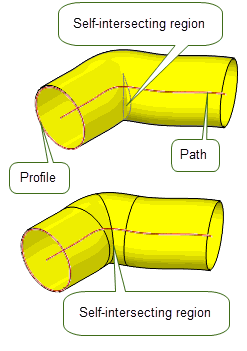
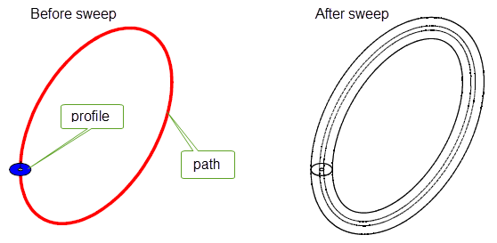

| |
Sweeping |
| <<< Creating Extruded Bodies | Chapters | Sweeping Tool Bodies Along a Path >>> |
Parasolid provides a range of functionality to let you create completely new bodies by moving entities along an arbitrary path. This technique, in general, is known as sweeping. Parasolid includes the following sweeping functions for creating swept bodies with different characteristics and for use in different situations.
|
Note: This functionality does not support facet bodies. |
|
Create a helical curve or surface by sweep a point or curve about an axis. See Section 39.5, “Creating helical curves and surfaces” for more information. |
|
|
Sweep a solid tool body along a path. See Chapter 40, “Sweeping Tool Bodies Along a Path” for more information. |
For examples of this functionality, see the code examples in the
C++\Code Examples\Modelling\Profiling
folder, and in the
C#\ExampleApplication.Net\Code
Examples\Modelling\Sweeping
folder located in
example_applications
in your Parasolid installation folder.
When sweeping bodies, one or more profiles must be supplied in addition to a path that defines both the direction and the extent of the sweep. This path is supplied as a wire body consisting of one or more connected edges and the profiles can be supplied as a set of one or more wires or sheet bodies. If they are all wire bodies, then the resultant swept body is a sheet. If any of the profiles is a sheet body, then the resultant swept body is a solid. If the cross-sectional shape of the supplied profiles varies, then the cross-section of the resulting swept body transitions smoothly between each profile, as shown in Figure 39-1.
Figure 39-1 Sweeping sheet and wire profiles along a path to produce a body
Swept bodies can be created with or without additional wire bodies called guide wires. When used in conjunction with PK_BODY_make_swept_body_2, these guide wires provide finer control over the shape and orientation of the resultant swept body.

Figure 39-2 Sweeping a profile along a path with a guide wire
Using PK_BODY_make_swept_body_2, you can control the sweep in a number of ways. The following table summarises these with full details of each being discussed in the rest of this chapter.
|
Locking the direction of normal alignment You can lock the sweep to a particular direction or to a set of specified faces. Locking constrains the orientation of a profile so that a better sweep is produced. See Section 39.2.6, “Locking the direction of normal alignment” and Section 39.2.7, “Locking the sweep to specified faces” for more information. |
|
|
You can also control the size and position of a single profile as it moves along a smooth path . See Section 39.2.9, “Specifying scale” for more information. |
|
|  |
You can control the rotation of a set of profiles as they move along a path. See Section 39.2.8, “Specifying twist” for more information. |
|  |
You can control the repair of self-intersecting regions. If a swept body intersects itself, Parasolid tries to repair the body and removes the intersection by splitting the faces involved. See Section 39.2.17, “Self-intersection repair”for more information. |
|
You can create a series of profiles that represent cross-sections of a swept body. These cross-sections allow you to preview what the resultant body would look like before you commit to creating it. See Section 39.2.4, “Returning profile cross-sections” for more information |
You can also specify the topology of a swept body and clamp the swept surface at certain profiles during a multi-profile sweep. See Section 39.2, “Sweeping without guide wires” for more information on these and other options.
Solid bodies can be created by moving a solid tool body along a wire path using PK_BODY_make_swept_tool. This can be used to construct bodies that represent regions to be cut from a solid body using a machine tool. With this type of sweep, a tool body and path must be specified. See Chapter 40, “Sweeping Tool Bodies Along a Path” for more information.
Figure 39-3 Sweeping a solid tool profile along a path
Helical curves and surfaces can also be created from a starting point or curve using PK_POINT_make_helical_curve and PK_CURVE_make_helical_surf. See Section 39.5, “Creating helical curves and surfaces” for more information.
This section discusses the use of PK_BODY_make_swept_body_2 when supplying a path but no guide wires.
Profiles are supplied as a set of one or more wire or sheet bodies. (Sheet profiles are always considered closed.)
If a single profile is specified, the cross-section of the resulting body will be constant along the path (unless scaling is used), and remain the same as the input profile.
If multiple profiles are specified, the cross-section of the resulting body is smoothly transformed between the shapes of the specified profiles.
In addition, if multiple profiles are specified you must not simplify the body (see Section 39.2.13, “Simplifying the final body”) or scale the body (see Section 39.2.9, “Specifying scale”).
If all the profiles supplied are wire bodies, the resulting swept body is a sheet. The sheet is constructed so that the outward normal is aligned with the cross product of a tangent in the direction of the profile orientation, and the tangent along the path (taken in that order).
Figure 39-4 Sweeping open wire profiles into a sheet body
Each component of a wire profile must be oriented; you can use PK_EDGE_propagate_orientation for this purpose. When supplying multiple profiles you must ensure that the directions of all the profiles are consistently oriented.
If any one of the profiles supplied is a sheet body, the resulting swept body is solid. There is a limit to the number of sheet profiles that you can specify in any given sweep operation:
Figure 39-5 Combining sheet and wire profiles in sweeps
The normals of the faces in any sheet profile must be oriented in the same direction as the sweep path. You can use PK_BODY_reverse_orientation to do this.
Profiles with multiple loops are allowed: sheet profiles can have multiple laminar boundaries, and wire profiles may be disjoint, as shown in Figure 39-6.
Figure 39-6 Sweeping sets of profiles with multiple loops
Sweeping a set of profiles containing a single profile with multiple laminar boundaries along a closed path results in a solid with an internal void, as shown in Figure 39-7.
Figure 39-7 Performing a sweep using a sheet profile with two laminar boundaries
Note that the geometry or topology of the profile does not appear in the resulting solid. Your application should delete the profile when it is no longer required.
The result of sweeping a series of disjoint profiles is, in general, the same as the result of sweeping the connected components separately, except that the result is a single (disjoint) body. (There are, however, exceptions: see Section 39.2.12, “Matching vertices on profiles”, for details.)
If you supply disjoint profiles, it is possible that the resulting swept bodies may interfere in some way.
The path you supply defines both the direction and the extent of the sweep. The path is supplied as a wire body, which must be manifold and oriented (using PK_EDGE_propagate_orientation, if necessary). The sweep direction follows the direction of the wire, beginning at the start vertex of the path and finishing at the end vertex.
|
Note: The path must not contain any tolerant vertices. |
Non-smooth (G1-discontinuous) paths are allowed; however, for sweeps that use multiple profiles, paths must be visibly G1 smooth. Sweeps that use a single profile may have paths that are not visibly G1 smooth: in such cases, any corners in the path can produce mitred corners (as shown in
Figure 39-8) or rounded corners in the resulting swept body using the
corner_type
option. For more information on this option see Section 39.2.20, “Specifying corner types”.
Figure 39-8 Mitred corners of the body (right) are produced from corners in the path (left) that are not G1-continuous
None of the path’s geometry or topology appears in the resulting body. It is the application’s responsibility to delete the path when it is no longer required.
Sweeping along a closed path may not result in a closed sweep if the sweep twists so that the start and end of the sweep do not align (shown in
Figure 39-9(a)). If this happens, the operation will fail with the failure status PK_BODY_sweep_torsion_failure_c. You can untwist this torsion to enable the sweep to succeed by supplying an appropriate law curve to the
twist
option (shown in
Figure 39-9(b)). This value can be obtained from the x co-ordinate of the
fault_locations
field of the returns argument. For more information on the
twist
option, see Section 39.2.8, “Specifying twist”.
Figure 39-9 Untwisting torsion in a closed path to ensure a successful sweep
In addition to profiles and a path, you need to specify a series of path vertices in the call to PK_BODY_make_swept_body_2. For each profile supplied, an associated path vertex must be specified which anchors the profile to the path. Each path vertex given must belong to the path itself.
If the first path vertex specified is not the same as the start vertex of the path, the first profile is swept back to the beginning of the path. In the resulting swept body, it looks as if the first profile has been placed at both the start of the path and the first path vertex given. The same is true if the last path vertex is not the same as the end vertex of the supplied path: the last profile is swept forward to the end of the path.
Figure 39-10 shows an example where the path vertex for the first (square) profile is not the same as the start vertex of the path: in the resulting swept body, the square profile has been extended back to the start of the path.
Figure 39-10 Extending the first path vertex back to the start of the path
By default, the result of sweeping one or more profiles along a path is a solid or sheet body. However, you can also use PK_BODY_make_swept_body_2 to create a series of profiles that represent cross-sections of the swept body that would otherwise be created. Returning cross-sections, rather than the final swept body, is much quicker than producing the swept body itself. Sweep cross-sections are an excellent way of creating a representation of the final swept body, allowing you to provide your users with a quick preview facility that they can use before committing to creating the final swept body.
Figure 39-11 shows some examples of cross-section profiles that can be generated from a path and profile, together with the equivalent swept bodies. When generating cross-section profiles, the body returned by PK_BODY_make_swept_body_2 is always disjoint:
Figure 39-11 Creating a series of cross-section profiles
Parasolid provides you with a number of options for controlling when and how cross-section profiles are created:
output_xsect |
Whether to create a swept body, or cross-section profiles of the sweep body. This takes the following values:
It is not possible to generate both the swept body and cross-section profiles in a single call to PK_BODY_make_swept_body_2. Should you wish to do this, you need to call PK_BODY_make_swept_body_2 twice, using different values of this option. Creating cross-section profiles in a separate function call should not incur any significant performance overhead. |
group_xsect |
How to group the cross-sections that are produced for the sweep operation.
More details about the behaviour of these values for different types of path are given in the rest of this section. |
n_xsects |
The number of cross-sections to produce when |
Depending on the nature of the path and the value of
group_xsect
, Parasolid can sometimes produce a different number of cross-sections than you expect.
If
group_xsect
is PK_sweep_group_xsect_no_c, then Parasolid returns the number of cross-sections specified in
n_xsects
if the path is smooth. These cross-sections are distributed evenly along the length of the path, meaning that, in general, cross-sections are not placed at vertices on the path.
However, if the path is non-G1 continuous, Parasolid also creates two additional cross-sections at each non-G1 vertex in the path, oriented in the direction of the path on either side of the G1 discontinuity.
Figure 39-12 shows two simple examples illustrating this behaviour.
|
Note: The path itself is not returned with any of the examples shown in this section, and is only included for clarity. |
Figure 39-12 Specifying a total number of cross-section profiles
If
group_xsect
is PK_sweep_group_xsect_per_edge_c then, for paths that contain smooth vertices, Parasolid produces fewer cross-sections along the path than may be expected from the value
n_xsects
: the vertices at both ends of each edge of the path are considered to belong to that edge, but cross-sections at smooth vertices are returned only once.
For paths that contain non-smooth vertices, however, Parasolid creates the number of cross-sections specified for each edge that contains a non-G1 vertex.
Figure 39-13 shows how, by specifying 3 cross-sections per edge, a two-edge path with a smooth vertex returns 5 cross-sections, while a two-edge path with a non-smooth vertex returns 6 cross-sections.
Figure 39-13 Specifying a total number of cross-section profiles per edge
If
group_xsect
is PK_sweep_group_xsect_per_vx_c, Parasolid behaves in a similar way to PK_sweep_group_xsect_per_edge_c, depending on whether each vertex on the path is G1 or not.
Figure 39-14 shows the results when returning cross-section profiles at vertices for the same examples already shown.
Figure 39-14 Specifying a cross-section profile for each vertex
When creating cross-section profiles for every vertex, Parasolid honors any entries in the
ignorable_vertices
array: no cross-sections are produced at ignorable vertices.
The
alignment
field of PK_BODY_make_swept_body_2_o_t is used to control the orientation of the profiles as they move along the path. When no guide wires are present, you can choose to either keep the orientation constant, or vary the orientation along the sweep to follow the shape of the path, as shown in
Figure 39-15.

The
alignment
field takes the following values:
An examples of a model with guide wires that uses PK_BODY_sweep_align_parm_c and PK_BODY_sweep_align_arclength_c is given in Figure 39-54.
Note: If
alignment
is specified as normal, Parasolid adjusts its frame of reference at any G2 discontinuity in the sweep path to maintain continuity of the resulting surfaces. |
For non-planar paths, profiles that remain at a fixed angle to the normal plane of the path may not always be desirable. In these cases, you can use the
lock_direction
option to specify a lock direction that constrains the orientation of the profiles to give better results. The profiles then maintain a fixed relationship to the lock direction, the exact nature of which depends on the value of
lock_direction
, as described below.
Figure 39-16 The effect of a lock direction with PK_BODY_sweep_align_normal_c.
Figure 39-16 shows a path arising from the intersection of two cylinders (one vertical, and one horizontal). Without a lock direction specified, the swept body will not be aligned with the outside wall of the vertical cylinder. This can be achieved by specifying a vertical lock direction, as shown.
The lock direction is specified by assigning values to the following fields:
|
Whether to use a lock direction for the sweep (PK_LOGICAL_false). |
|
Figure 39-16 also shows how you can control the exact shape of the swept body by using lock direction as a rotation lock. When you do this, the profile continues to maintain a fixed relationship to the lock direction projected into the plane perpendicular to the path tangent, while still allowing the orientation of the profile to vary as it travels along the path. You can apply a rotation lock by setting the
lock_type
option to PK_sweep_lock_rotation_c.
When sweeping with guide wires, you can use the
lock_type
option to further control the result of a sweep operation. See Section 39.3.3, “Controlling the behaviour of locks”, for more information.
Note: When sweeping without guide wires, the
lock_type
option should not be set to PK_sweep_lock_path_c. |
Rather than locking a sweep operation to a particular direction (as described in Section 39.2.6, “Locking the direction of normal alignment”), you can lock the sweep operation to a set of faces. If you use this option, at each point along the sweep path, the sweep cross-section maintains a fixed relationship to both the direction of the sweep and the normal of whichever of the specified faces that path point is coincident with.
You can lock a sweep operation to a set of faces using the following options:
n_lock_faces lock_faces |
An array of faces that you want to lock the sweep to.
For a list of constraints that apply when using |
Figure 39-17 shows an example where a square profile is swept along a straight line that forms the laminar boundary of a lock face with an attached B-surface. The resulting swept body is locked to the normal of this face, resulting in a non-linear sweep.
Figure 39-17 Locking the orientation of the sweep to a set of faces
The following constraints apply when using
lock_faces
:
lock_faces
, and be visibly G1 continuous. In cases where the path passes outside of the boundary of the supplied lock faces the following constraints apply:
Figure 39-18 Locking the sweep along an edge between a supplied set of faces
Figure 39-19 Locking the sweep to a supplied set of faces
This option cannot be used in conjunction with any of the following:
Note: PK_BODY_make_swept_body_2 accepts faces from general bodies provided the supplied
lock_faces
are locally manifold. |
The
twist
option lets you control the rotation of a set of profiles as they move along the path, as shown in
Figure 39-20.
Figure 39-20 Twisting a sweep with a single profile
|
Note: Twist can only be used when you supply a G1-continuous path. |
You control sweep twist by supplying one of the following:
The twist is performed by applying a rotational transformation to the profiles as they move along the path.
Figure 39-21 Twisting sweeps with multiple profiles
When adding twist to a swept body that uses multiple profiles, the profiles themselves need to be transformed about the appropriate location of the path so as to pass through the swept body. Parasolid lets you choose whether to supply profiles in their transformed or untransformed orientations, using the
profile_law
option. This takes the following values:
Figure 39-22 illustrates the effect of the
profile_law
option on a swept body that uses the same path and profiles as the example in
Figure 39-21.
Figure 39-22 Supplying profiles in untransformed and transformed orientations
Twist laws cause rotations of the whole profile around the path, and can sometimes produce corkscrew-like sweeps such as the one shown in Figure 39-23. Parasolid also provides dedicated functionality for creating helical curves and surfaces: see Section 39.5, “Creating helical curves and surfaces” for full details.
Figure 39-23 Sweep with scale and twist
The direction in which the specified
twist
is applied is modified by any
alignment
specified for the sweep operation, as shown in
Figure 39-24.
Figure 39-24 Sweep with alignment and twist
If you are using parallel alignment and want to specify an explicit twist direction, use the following options:
Figure 39-25 shows the effect of applying a specific twist direction when sweeping a sheet profile along a straight path. By default, a sweep with parallel alignment results in the profile tilting with respect to the path as it moves along the path, because of the initial angle between the profile normal and the path. By applying a twist direction that is perpendicular to the plane of the profile, this effect can be removed, resulting in a swept body that twists, but does not tilt.
Figure 39-25 Specifying a twist direction when sweeping with parallel alignment
If a lock direction is used with normal alignment, the axis of rotation follows the tangent of the path but remains within the plane normal to the lock direction: see Section 39.2.6, “Locking the direction of normal alignment”.
You can control the size or position of a single profile as it moves along a smooth path using the
scale
,
scale_type
, and
scale_point
options.
|
Note: Scale can only be used when you supply a single profile and a G1-continuous path. |
scale |
Describes how the size or position of the profile should vary as it moves along the path. See Section 39.2.9.2, “Specifying scale laws” for information. |
scale_type |
Specifies whether the size of the profile should be changed, or its distance from the path, or both. See Section 39.2.9.1, “Specifying the type of scale” for information. |
scale_point |
A point, used in conjunction with |
You can specify how scaling affects the shape of the swept body using the
scale_type
and
scale_point
options. The
scale_type
defines what type of scale is to be used, and the behaviour of
scale_point
depends on the chosen
scale_type
.
The
scale_type
may be one of the following:
Figure 39-27 shows the effect of different values of
scale_point
on
scale_type
. In each case, the swept body is viewed from above for simplicity.
Figure 39-27 The effect of different values of
scale_point
on
scale_type
Note: The
scale_point
does not need to be on the profile itself: it can be any point in space, and the swept body will be scaled appropriately. |
The supplied
scale
should be one of the following:
The
preferred_continuity
field sets the intended level of continuity of the sweep. The possible values are:
Specifying a value of PK_continuity_c2_c means that the resulting surfaces are C2-continuous except where inappropriate due to the geometry of the supplied path or profiles, or where C2 continuity would result in an excessive number of B-spline vertices.
The
topology_form
field controls how faces should divide up the resulting body. It takes the following values:.

Figure 39-28 Sweeping topology form
The
ignorable_vertices
option provides further control over the topology of the resulting swept body, particularly when using grid topology. You might find this option useful if, for example, you want to imprint vertices on a path to mark positions for values in discrete twist or scale laws, but you do not want to add unnecessary topological complexity to the resulting body.
The option takes an array of vertices, each of which represents a vertex on the path that is to be ignored when constructing the topology of the swept body.
Normally, if
topology_form
is set to PK_BODY_topology_grid_c, then edges are added around the swept body at each path vertex, so as to create additional faces in the resulting body. If, however, that path vertex is included in the array of
ignorable_vertices
, no additional edges or faces are added to the swept body.
As a special case, you can use
ignorable_vertices
to control the topology of swept bodies created from periodic sweep paths. Normally, edges are added to the swept body at the start (and end) point of such sweeps, as shown in
Figure 39-29. If you supply the start vertex of the path in
ignorable_vertices
, no such edges are added, thereby producing a periodic body with no seam.
Figure 39-29 Using
ignorable_vertices
to create seamless sweeps
If you are performing a sweep that uses more than one profile, vertices on neighbouring profiles need to be matched with each other in order to fully define the sweep. In some circumstances, Parasolid can do this for you, but in other cases you need to provide additional information to successfully define the sweep. This section describes the information you need to provide in different situations.
|
Note: If you are sweeping with only a single profile, you do not need to provide matching information. |
If each profile only contains a single loop, then:
|
All the profiles are open and contain the same number of vertices. |
No additional matching information needs to be given; Parasolid can match vertices automatically |
|
All the profiles are closed and contain the same number of vertices. |
Specify a single strand of vertices to connect along the sweep, one vertex for each profile, using the |
|
You need to do one of the following:
In the example shown in
Figure 39-30, a complete mapping could be specified as |
Figure 39-30 Specifying a complete mapping of vertices
If any of your profiles contain several loops (i.e, wire profiles are disjoint, or sheet profiles contain more than a single laminar boundary), then you must provide matching information using the
matches
option.
A vertex on a given loop may not be matched to multiple vertices from different loops on the adjacent profile.
The following illustrations show the different effects you can achieve by mapping across different loops in the supplied profiles, when the configuration permits.
In
Figure 39-31,
matches
is specified as
[[A C], [B D]]
. This produces a disjoint result that consists of two tubes.
Figure 39-31 Mapping vertices onto different components
In
Figure 39-32, the same profiles and path are used, but,
matches
is specified as
[[A D], [B C]]
. This produces a non-disjoint result with a self-intersection that is repaired automatically.
Figure 39-32 Mapping vertices onto different components
The
simplify
option allows your application to control whether the surfaces of the resultant body should all be B-surfaces or whether they should be simplified to analytics where possible. Simplification is performed on the entire surface of each face and does not alter the topology of the resultant body.
You can control how the result body is simplified using the
simplify
option. This option takes the following values:
If you want to produce the simplest possible surfaces in the result (rather than the minimal number of surfaces), you may need to set the
topology_form
option to a non-default value. See Section 39.2.11, “Specifying the topological form of swept bodies”, for more details.
Note: If
simplify
is set to PK_BODY_simplify_swept_spun_c, swept and spun surfaces may be generated, even if PK_SESSION_set_swept_spun has been set to PK_LOGICAL_false. |
There are several options in PK_BODY_make_swept_body_2_o_t that let you control how tolerances are used when creating swept bodies. These are as follows:
You can use the
want_edge_tracking
option to request that tracking information for edges be returned in the
tracking_info
structure. By default, only tracking information for faces is returned.
The resultant bodies produced by PK_BODY_make_swept_body_2 have nominal curves enabled.
Edges running parallel to profiles have nominal curves on them derived from the profile geometries. The nominal curves are either copies of the (nominal) curves of the profile edges, transformed along the path, or, for edges in between the positions of two profiles, B-curves derived from the surfaces between the profiles.
Lateral edges, i.e. edges running in the direction of the sweep, have nominal geometry derived from the surfaces of their adjacent faces. In general they are B-curves, though analytic curves may be produced when
simplify
is set to PK_BODY_simplify_yes_c.
When a sweep results in a body that intersects itself, Parasolid attempts to repair the body to produce a valid solid. This may involve splitting faces; however, the tracking information returned reflects the final state of the body. Figure 39-33 shows two examples of bodies that intersect themselves, that have been successfully repaired by the sweep operation.

Figure 39-33 Fixing global self-intersections, where sweeping creates a self-intersecting body
In addition, you can use the
repair
option to repair locally self-intersecting surfaces and clashes between adjacent faces:
repair
to PK_sweep_repair_yes_c to repair faces.
repair
to PK_sweep_repair_report_c to repair faces, and return the repaired faces in the
fault_entities
array.
Figure 39-34 shows an example where sweeping a profile along a path creates a tube with a local self-intersection. The self-intersection can be removed, and the relevant face split, by switching on the
repair
option. By default, local self-intersections are not repaired.
Figure 39-34 Fixing local self-intersections using the
repair
option
Note: Global self-intersections are always repaired by PK_BODY_make_swept_body_2. Local-self intersections are only repaired if the
repair
option is switched on. If
repair
is switched off, then a self-intersecting body may be returned, or the sweep operation may fail; PK_BODY_make_swept_body_2 returns a fault status indicating self-intersection in both cases. |
When using more than one profile, you can clamp the swept surface at certain profiles. This constrains the shape of the surface at those profiles, in order to ensure a smooth solution.
Figure 39-35, Figure 39-36 and Figure 39-37 show the effects of clamping profiles during a sweep operation. The body is swept between the first and last profiles shown in Figure 39-35, and then extended outwards to the ends of the path.
Figure 39-35 Path and profiles from which a body will be created
In
Figure 39-36 (a), the profile is extended without any modifications made to the surface. This results in a body that is not G1-smooth at the points coincident with the first and last profiles. Diagrams (b) and (c) in
Figure 39-36 illustrate the use of clamps at these two profiles, resulting in bodies that are G1-smooth everywhere. Note that the topology of each of these bodies (using a value of PK_BODY_topology_minimal_c for
topology_form
; see Section 39.2.11, “Specifying the topological form of swept bodies” for details) is simpler than that in diagram (a), with only three faces created instead of five.
Figure 39-36 Effects of clamping profiles during a sweep operation
You can specify at which profiles you apply clamps by using the following options in the PK_BODY_make_swept_body_2_o_t structure:
Each entry in the profile_derivs array is a structure containing the following fields:
The effects of varying the magnitude of the clamp (in the const_profile_clamp structure) are shown in Figure 39-36 and Figure 39-37. This magnitude controls the extent of the clamp: the larger the magnitude, the greater the region of influence of the clamp. For both values, the body is G1-smooth at the joins (where the first and last profiles are), unlike the case where no clamps are applied.
Figure 39-37 Flat (projected) view of the bodies in Figure 39-36, shown together for comparison
Figure 39-38 shows the effects of using
face_clamp
when sweeping through multiple profiles. Clamps are on the edges of both wire profiles. These constrain the sweep so that the clamped edges smoothly meet their corresponding clamping faces.
Figure 39-38 Sweeping profiles with face clamps
Note: When specifying
face_clamp
the following should not be supplied.
|
You can use the
deriv_mag
option in PK_BODY_make_swept_body_2 to control the algorithm that Parasolid uses to calculate derivative magnitudes when derivative conditions have been specified. This option takes two values:
|
Note: It is recommended that you always set this option to PK_sweep_deriv_mag_round_c unless you are updating old models in which case you should set this option to the default value. |
When the sweep path is not G1-continuous, you can choose to produce either a mitred or a rounded corner at each sharp corner on the path using the
corner_type
option. By default, mitred corners are produced. When set to PK_sweep_corner_type_spin_c, the profile is spun on the convex side of the path to produce rounded corners.
Figure 39-39 Producing mitred or rounded corners during a sweep operation.
This section discusses the use of PK_BODY_make_swept_body_2 when supplying guide wires as well as a path. The following combinations are possible:
The path may coincide with one of the guide wires. If so, you must use the same wire body for both the path and the guide wire. It is an error to supply two separate (identical) wire bodies in this case.
Figure 39-40 illustrates the difference between:
In the one and two guide wire cases, two wire bodies are supplied. In the three guide wire case, three wire bodies are supplied. Where the path is not itself a guide wire, the resulting body does not remain in contact with the path; if the path is also a guide, however, the body does remain in contact with it.
|
Note: Most of the functionality described in this section applies only when more than one guide wire is supplied (either as separate entities, or when one is also the path). |
Figure 39-40 Supplying one, two, or three guide wires
Figure 39-41 Supplying more than three guide wires
This section concentrates on the features available when using more than one guide wire, although it does not describe every possible combination of options. The remaining diagrams in this section are all cases where the path is also the first guide wire, unless otherwise stated.
|
Note: Most of the options for sweeping without guide wires also apply when guide wires are present, with the exception of the following: |
The rules governing paths, profiles and path vertices are unchanged from those given in Section 39.2.1, “Supplying profiles”, Section 39.2.2, “Supplying a path” and Section 39.2.3, “Specifying path vertices”, with the following exception:
In particular, more than one profile may be swept, and the profiles do not have to be in contact with the guide wires at any point, unless the curve method is used. See Section 39.3.5, “Guided sweep methods” for details.
Guide wires provide finer control over the shape and orientation of the resultant swept body.You can specify guide wires via the
n_guides
and
guides
options. The guides are supplied as wire bodies that are manifold, oriented and visibly smooth. The sweep follows the direction of the path, but is bounded by the guide wires. The path then determines the orientation of the profile (subject to the alignment options), and the guide wires control the amount of scaling and rotation that occurs. The behaviour of guide wires depends on the number of guide wires supplied and the value of the
guide_scope
option. This option takes the following values:
|
When set to this value, up to three guide wires can be supplied. The behaviour of these guide wires depends on whether you supply, one, two, or three guide wires. Each guide wire supplied influences the sweep. See PK_BODY_make_swept_body_2 for more information on this. |
|
|
When set to this value, at least three guide wires must be supplied. Each guide wire supplied influences only the regions of the sweep between it and its neighbouring guides. See PK_BODY_make_swept_body_2 for more information on this Note: When set to this value, separate faces are produced between each pair of guide wires even if the edges between them meet smoothly. |
Figure 39-42 illustrates how the behaviour of three guide wires differs when
guide_scope
is set to its various values. In this image, the path is not used as a guide wire.
Figure 39-42 The effect of
guide_scope
when sweeping with three guide wires
If you supply three guide wires, and the
guide_scope
option is set to PK_sweep_guide_global_c, the following restrictions apply:
guide_method
(Section 39.3.5, “Guided sweep methods”),
guide_scale
(Section 39.3.9, “Scaling the profile”), and
profile_continuity
options must be left at their default values.
If the
guide_scope
option is set to PK_sweep_guide_local_c the following restrictions apply:
guide_matches
in
guide_controls
as described in Section 39.3.2.2, “Guide vertices”.
alignment
option must be either PK_BODY_sweep_align_normal_c or PK_BODY_sweep_align_parallel_c as described in Section 39.3.7, “Alignment”.
guide_method
option (See Section 39.3.5, “Guided sweep methods”) must be PK_guide_method_point_c.
n_profile_derivs
option must be 0.
profile_continuity
option must be set to PK_continuity_g0_c.If you supply non-G1 guide wires, the following restrictions apply:
Figure 39-43 Sweeping along a visibly G1-smooth path with a non-G1 guide wire
For each guide wire, you need to specify a set of vertices that corresponds to the input profiles. These are stored in the
profile_matches
field of the
guide_controls
option. Each vertex marks a point on the guide wire corresponding to a particular profile; this is equivalent to specifying path vertices for the path. All vertices specified for a given guide wire must belong to that guide wire, but do not have to include the start or the end vertices.
The
guides_controls
option also contains the
guide_matches
field. This field contains a set of vertices that correspond to the input profiles. Each vertex indicates a point on the profile that corresponds to the relevant guide vertex specified in the
profile_matches
field. This field is only required if the
guide_scope
option is set to PK_sweep_guide_scope_local_c and you are sweeping with three or more guide wires.
|
Note: Unlike paths, guide wires are allowed to contain tolerant vertices. |
Figure 39-44 Specifying a path, a profile, one or two guide wires and their respective vertices
As discussed in Section 39.2.4, “Returning profile cross-sections”, PK_BODY_make_swept_body_2 can be use to create a series of profiles that represent cross-sections of the swept body that would otherwise be created.
When guide wires are supplied their geometry may dictate that the extent of the resultant sweep may be shorter than the supplied path. In such cases when the output of cross-section profiles is requested the effect will be as follows:
In addition to setting a lock for a sweep operation (described in Section 39.2.6, “Locking the direction of normal alignment”), Parasolid lets you control the behaviour of that lock . If you have specified two guide wires, the lock behaviour you choose can affect the resulting swept body.
|
Note: In most cases, you cannot change the behaviour of a lock if you have fewer than two guide wires in your sweep operation. The exception to this is rotation locks, as described below. |
You can control whether the profiles in the swept body are fixed relative to the
lock_direction
using the
lock_type
option, which can take the values described below:
|
The sweep direction is projected into the plane perpendicular to the
If this value is used with two guide wires and
This value must not be used if two guide wires are supplied and |
|
|
The sweep direction is projected into the plane perpendicular to the Using this value ensures that profiles do not shear in cases where you use two guide curves and specify a lock direction.
This value must not be used if less than two guide wires are supplied or if |
|
|
The
Unlike other values of
This value must not be used if two guide wires are supplied and |
The
lock_type
option only has an effect on the resulting swept body if
have_lock_direction
is PK_LOGICAL_true. It is an error to specify PK_sweep_lock_path_c if
have_lock_direction
is PK_LOGICAL_false.
The next few illustrations show a simple example in which a profile is swept along a path with an additional guide wire (the path itself is also used as a guide wire).
lock_direction
, the profile tilts with respect to the path, as shown in
Figure 39-45. Figure 39-45 Specifying no lock direction when sweeping with guide wires
lock_direction
using the default lock behaviour, the profile no longer tilts, but it does shear as it moves along the path, as shown in
Figure 39-46. Figure 39-46 Specifying default lock direction when sweeping with guide wires
lock_type
of PK_sweep_lock_path_c, the profile still does not tilt, and in addition it no longer shears as it moves along the path, as shown in
Figure 39-47.Figure 39-47 Specifying path lock when sweeping with guide wires
lock_type
of PK_sweep_lock_rotation_c, then the profile both tilts and shears. This is shown in
Figure 39-48.Figure 39-48 Specifying rotation lock when sweeping with guide wires
Figure 39-49 shows the relationship between the end profiles and the path and guide wires of this example more closely, by overlaying all four cases.
Figure 39-49 Effect on end profile of different lock behaviours
You can constrain the shape of the swept body by specifying a clamp direction for one or more vertices on a guide wire. This can either take the form of a specified reference direction vector (known as a direction clamp), or can be fixed such that the relationship between the profile and the guide wire is preserved along the entire extent of the sweep (known as a fixed clamp).
|
Note: You cannot specify guide clamps if you supply three guide wires. |
You specify clamp directions by setting the value for the
clamp_type
field of the
guide_controls
option to one of the following:
After specifying a clamp, the body is created such that the angle between the transformed profile (i.e., the cross-section of the body) and the clamp direction remains fixed relative to the guide wire. This results in a distortion of the (transformed) profile in addition to the scaling and rotation due to the guide wires, as shown in Figure 39-50.
Figure 39-50 Guide wires with tangent clamp directions using
dirn_clamp
You can also assign different clamp directions to different vertices on a single guide wire. This results in a smooth interpolation of the direction to be preserved.
Figure 39-51 illustrates the difference between the different types of clamp.
Figure 39-51 Specifying different clamp types for guide wires
You control the shape of the swept body by using the
guide_method
option, as shown in
Figure 39-52.
|
Note: This option can only be set to a non-default value if you supply exactly two guide wires. |
Figure 39-52 Different methods of sweeping
The effects of each type of method are summarised in the table below.
|
The cross-section of the swept body is rotated and scaled so that the points initially coincident with the |
|
|
The cross-section is rotated but not scaled. One of the points initially coincident with the |
|
|
The cross-section is rotated but not scaled. This option can only be used when a single profile is supplied, which intersects the guide wires at their Note: The profile must be large enough to span the greatest distance between the two guide wires (otherwise PK_BODY_sweep_bad_path_c is returned). |
|
|
The cross-section is rotated and scaled so that its orientation remains fixed with respect to a lock direction, and one of the points initially coincident with the This choice differs from PK_sweep_guide_point_c (with a lock direction) in that no shearing of the profiles is caused by the sweep transformation. Note: A lock direction must be supplied (see Section 39.2.6, “Locking the direction of normal alignment” for details), otherwise the error PK_ERROR_bad_combination will occur. |
In cases where just one of the points initially coincident with the
profile_matches
vertices is to remain in contact with its guide wire, you specify which one via the
fixed_guide_index
option. A value of 0 for this option specifies that the first guide wire should remain in contact, and a value of 1 specifies the second guide wire.
If you specify two guide wires, Parasolid can trim the resulting swept body so that only the faces that lie between the guide wires are returned. You can trim swept bodies using the following options:
trim_to_guides |
if PK_LOGICAL_true, then the swept body is trimmed so that only the faces between the two guide wires are returned. Default: PK_LOGICAL_false. |
have_trim_point trim_point |
If you supply a closed profile, then there are two possible sets of faces that could be returned as a result of trimming the swept body. In order to specify which set to return, you must also specify a By default, Parasolid assumes that no trim point information is required. Figure 39-53 shows an example where supplying different trim points results in different sets of faces being returned. |
Figure 39-53 shows the different swept bodies that can be created when sweeping a closed (circular) profile along a path (which also acts as a guide wire) together with a second guide wire. When
trim_to_guides
is PK_LOGICAL_false, the untrimmed tube-like body is returned, but when
trim_to_guides
is PK_LOGICAL_true, two different trimmed results are possible, depending on the position of the
trim_point
.
Figure 39-53 Trimming swept bodies using guide wires
Note: To trim a swept body to specified guide wires, the following must be true:
|
Figure 39-54 shows the effect of the
alignment
option with the point method (PK_sweep_guide_point_c) on a model of a pipe of variable radius and orientation. When guide wires are present, two more types of alignment are possible: PK_BODY_sweep_align_parm_c and PK_BODY_sweep_align_arclength_c. A description of these values and their meanings is given in Section 39.2.5, “Controlling the profile alignment”. Note that parametric alignment coincides with arc-length alignment for this pipe model, although in general they are different.
|
Note: For PK_BODY_sweep_align_parm_c or PK_BODY_sweep_align_arclength_c, the path and guide wires must be either all open or all closed. |

Figure 39-54 The effect of
alignment
with the point method
Note: If
guide_scope
is set to PK_sweep_guide_scope_local_c, alignment must be set to either PK_sweep_align_normal_c or PK_sweep_align_parallel_c. |
Figure 39-55 shows the effect of the
topology_form
option with the point method (PK_sweep_guide_point_c) on a model with two guide wires that are distinct from the path. When PK_BODY_topology_grid_c is used, the final body has additional edges and faces corresponding to any vertices on the guide wires, as shown in the first diagram. A description of these values and their meanings is given in Section 39.2.11, “Specifying the topological form of swept bodies”.
Figure 39-55 The effect of
topology_form
with two guides and a separate path
The effects of the
guide_scale
option are summarised in the table below.
|
Note: This option can only be set to a non-default value if you supply exactly two guide wires. |
|
The sweep is scaled uniformly (in two directions). This is the default. |
|
|
The sweep is scaled only in the direction between corresponding points on the guide wires. |
The bodies in Figure 39-52 are scaled uniformly (PK_sweep_guide_uniform_c). Figure 39-56 below shows the corresponding bodies using lateral scaling (PK_sweep_guide_lateral_c).
Warning: PK_sweep_guide_lateral_c cannot be used if
guide_method
is set to PK_sweep_guide_chord_c or PK_sweep_guide_curve_c, or if guide clamps are present. |
Figure 39-56 Effect of lateral scaling on the point and project methods of sweeping
If your application relies on reproducing behaviour when updating models built using earlier versions of Parasolid, you can use the
update
option to help eliminate differences in rebuild results. This option lets you turn off some of the enhancements to sweeping, to ensure that sweeping gives the same results in the latest version of Parasolid as in earlier versions. See PK_BODY_sweep_update_t in the
PK Interface Programming Reference Manual for more information on this
update
option.
|
Note: The default value is PK_BODY_sweep_update_default_c which uses all appropriate sweeping enhancements. Setting to a non-default value disables all appropriate sweeping enhancements. |
You can also create helical curves and surfaces from a starting point or curve using PK_POINT_make_helical_curve and PK_CURVE_make_helical_surf.Spirals, helices, and tapered helices are all created using the same basic principles. For each shape, a point or a curve is swept several times about an axis in a circular motion. The distance of the point or curve from the axis, together with its distance along the axis, determine the nature of the final shape, allowing shapes such as those shown in Figure 39-57. Each of these shapes can be referred to as a general helix.
Figure 39-57 Examples of general helical curves and surfaces
All general helices have the following common properties, illustrated in Figure 39-58:
Figure 39-58 Anatomy of a general helix
You can create a general helix using the following functions:
Both of these functions take a very similar set of arguments:
|
A reference point for a helical curve. The helix need not include the point itself. |
|
|
A curve from which a section is used to create a helical surface |
|
|
The section of |
|
|
|
|
The number of turns that the helix makes, expressed as an interval. The supplied
For tapered helices, |
|
|
The helical pitch of the helix. If this is 0, a spiral is created. |
|
|
The spiral pitch of the helix. If this is 0, the helix does not taper. If this is a negative number, then the helix tapers inwards; if positive, the helix tapers outwards. For helices that taper inwards, the spiral pitch must be consistent with the number of turns requested, so as to ensure that the helix does not cross the axis. See Section 39.5.4, “Controlling inward taper” for details. |
|
a Applies to PK_POINT_make_helical_curve only.
b Applies to PK_CURVE_make_helical_surf only.
The
point
supplied to PK_POINT_make_helical_curve and PK_CURVE_make_helical_surf is a reference point that is used to determine the path of the resulting helix. In particular, it does
not necessarily represent a start point or end point for the helix: indeed, the resulting helix need not pass through
point
at all.
You use the
turns
interval to express how the helix should be formed “around”
point
:
point
is always taken to lie at 0 in
turns
, allowing you to create helices such as those described below:
|
starts at -X and ends at X, with point in the middle of the path |
|
|
starts at x and ends at X, so that point is not contained in the helix at all. |
The effect that different values of
turns
have on helices created from the same reference point is illustrated in
Figure 39-59.
Figure 39-59 Using
turns
to create different helices for a single reference point
Two combinations of values make a general helix taper inwards, as opposed to outwards:
turns
interval, combined with a negative
spiral_pitch
.
turns
interval, combined with a positive
spiral_pitch
.In either case, the helix can only taper inwards as far as the axis itself: any attempt to create a helix that tapers further than this results in the error PK_ERROR_bad_parameter.
To ensure that an inward-tapering helix is valid, the following must both be true:
turn
spiral_pitch
The following table shows a range of valid and invalid spirals. The invalid spirals would raise the error PK_ERROR_bad_parameter.
| <<< Creating Extruded Bodies | Chapters | Sweeping Tool Bodies Along a Path >>> |